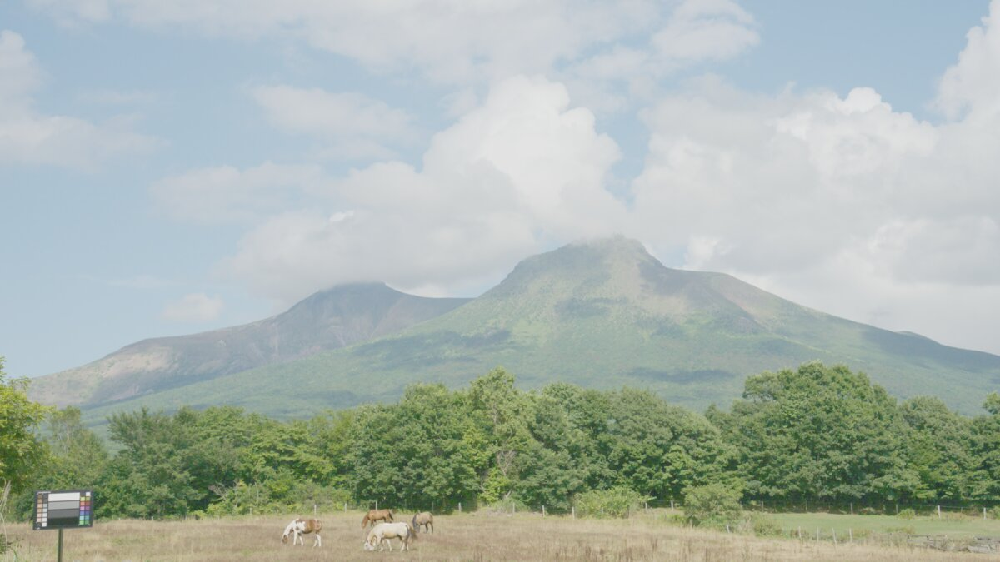
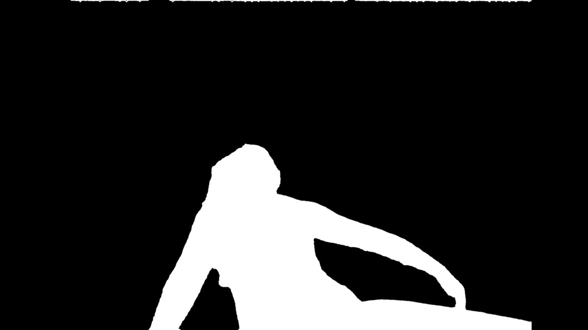
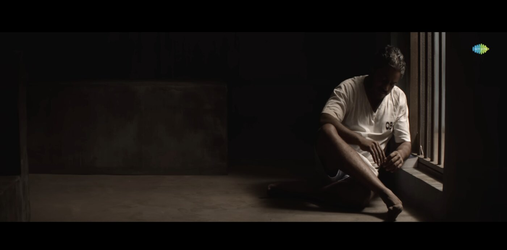
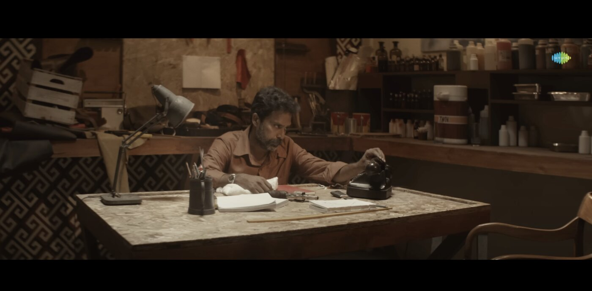
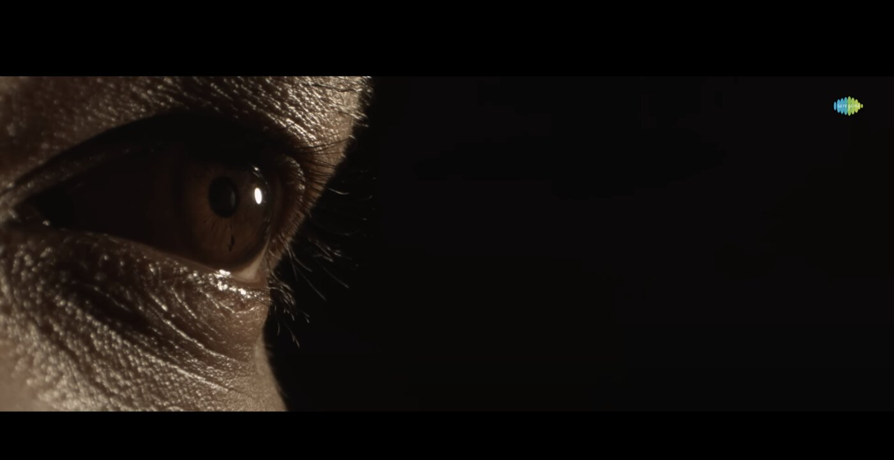

Generative AI engineer building production diffusion and computer-vision pipelines for feature films — grounded in 8 years as a working Director of Photography. I know what film-grade output looks like because I've shot and graded it.
Founder & CTO, Neural Engine Technology Pvt. Ltd. — research to production since Feb 2025. Every system below runs against real footage, real deadlines, real deliverables.
End-to-end Stable Diffusion + ControlNet + ComfyUI pipeline shipped into live feature-film post-production. Custom ControlNet conditioning preserves shot geometry across frames.
Model-driven segmentation with temporal-consistency smoothing producing film-grade mattes — eliminating multi-hour manual roto from the pipeline entirely.
Privacy-first RAW archival: compresses NEF/DNG masters ~20–50× (12 MB → 0.7 MB) while reconstructing chemically accurate DNGs that Lightroom reads as native RAW. Fully offline VLM auto-annotation (Ollama — LLaVA / Qwen-VL).
Stable Diffusion–based concept-art generator letting directors and DPs iterate on visual references in minutes rather than days — built by someone who has sat on both sides of that conversation.
Real working material: ACES/linear EXR plates ingested with camera metadata (chart in frame for color management), segmented by the SAM2 + temporal-consistency module into clean per-frame mattes — no manual roto.


Director of Photography, sixtyninemm Films (2017–2025). Cinematographer on the 2024 Tamil theatrical feature Bayamariya Brammai (dir. Rahul Kabali) — full visual language from lensing and lighting through on-set color management to the final grade. This is the practitioner-level color science behind every pipeline above.



AI-VFX venture. Shipped the entire GenAI pipeline — technical vision, founding-team hiring, ML research to production deployment for live feature-film work.
Feature and short films, including a 2024 theatrical release. Look development, on-set color management, final grade.
Production deployments and release rollouts for one of India's largest SaaS suites (10M+ users). Server provisioning, monitoring, grid operations.
Sri Muthukumaran Institute of Technology, Chennai · DeepLearning.AI Generative AI Specialisation · OUTSKILL GenAI & AI Engineering Mastermind.